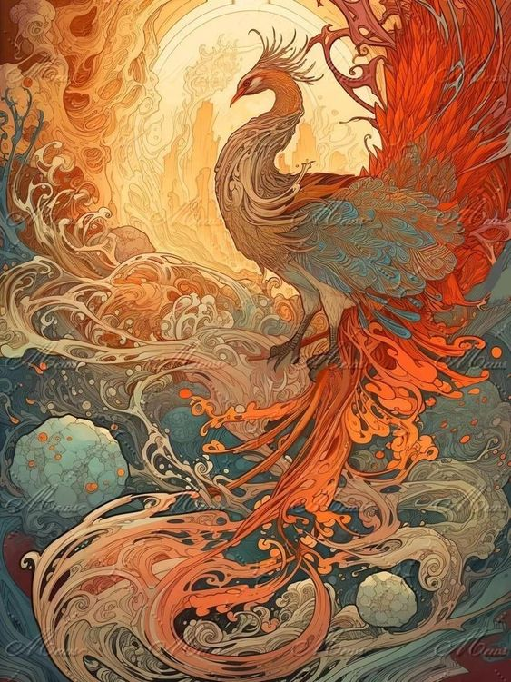
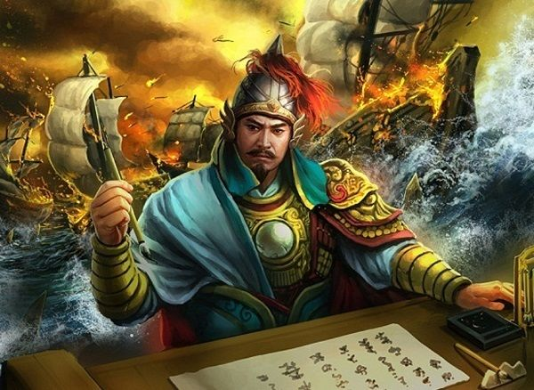
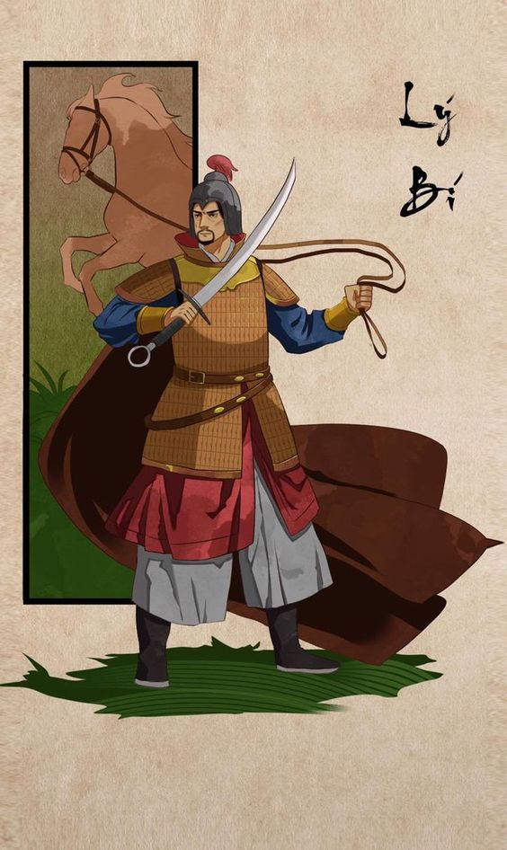
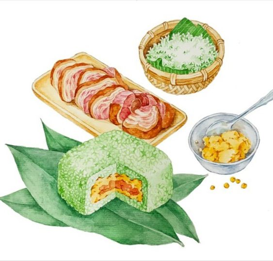

Giới thiệu tổng quan
Dự án xây dựng một website lịch sử và văn hóa Việt Nam là một phần trong sứ mệnh giáo dục cộng đồng về cội nguồn và giá trị của dân tộc. Xuất phát từ lời dạy của Chủ tịch Hồ Chí Minh: "Dân ta phải biết sử ta/Cho tường gốc tích nước nhà Việt Nam," dự án mong muốn giúp người Việt trẻ và cộng đồng dễ dàng tiếp cận các kiến thức lịch sử và văn hóa quan trọng. Trong thời đại hiện nay, khi nhiều người trẻ có xu hướng xa rời cội nguồn, "Hồn Việt" hy vọng sẽ là cầu nối giúp họ kết nối lại với truyền thống và bản sắc dân tộc.
Dự án "Hồn Việt" không chỉ là một kho tài liệu trực tuyến mà còn là một công cụ tương tác và khám phá di sản văn hóa, lịch sử của Việt Nam. Website cung cấp thông tin về các thời kỳ lịch sử lớn của Việt Nam như Thời kỳ Hồng Bàng, Bắc thuộc, Đại Việt, Pháp thuộc, và thời kỳ hiện đại. Ngoài ra, website còn có các chuyên mục về văn hóa dân gian và ẩm thực truyền thống. Mỗi chuyên mục được xây dựng với nội dung chi tiết, hình ảnh minh họa sinh động, giúp người dùng không chỉ nắm bắt thông tin mà còn trải nghiệm văn hóa.
Website "Hồn Việt" được phát triển dành cho mọi tầng lớp nhân dân, từ học sinh, sinh viên, giáo viên đến những người yêu thích lịch sử, và cả những nhà nghiên cứu. Với thiết kế thân thiện và dễ sử dụng, website tạo ra một không gian mở, cung cấp kiến thức toàn diện về lịch sử Việt Nam và các yếu tố văn hóa liên quan, đặc biệt thu hút giới trẻ – những người ít có điều kiện tiếp cận tài liệu lịch sử truyền thống.
"Hồn Việt" sử dụng các bài viết rõ ràng, dễ hiểu và bổ sung bằng hình ảnh minh họa, video, infographic để hỗ trợ người dùng nắm bắt nội dung. Các hình ảnh mang tính biểu tượng như kỳ lân, rồng, phụng, bánh chưng, bánh dày giúp tăng tính hấp dẫn và khơi dậy tình yêu văn hóa dân tộc.
Dự án "Hồn Việt" mong muốn trở thành một nguồn tài liệu hữu ích và đáng tin cậy cho mọi người, góp phần vào công cuộc bảo tồn và phát huy các giá trị truyền thống của dân tộc Việt Nam trong thời đại toàn cầu hóa.
Thời kỳ Hồng Bàng (2879 TCN - 258 TCN)

Thời kỳ Hồng Bàng là giai đoạn mở đầu của lịch sử Việt Nam, còn được biết đến với tên gọi thời đại các Vua Hùng. Theo truyền thuyết, nhà nước đầu tiên của người Việt được hình thành với tên gọi Văn Lang, do các vua Hùng trị vì. Thời kỳ này kéo dài từ năm 2879 TCN đến 258 TCN và được coi là giai đoạn khai sinh của nền văn minh Việt cổ, với nhiều yếu tố văn hóa và tập tục vẫn còn tồn tại đến ngày nay.
Truyền thuyết Lạc Long Quân - Âu Cơ là một trong những câu chuyện nổi tiếng nhất trong văn hóa Việt Nam, thể hiện nguồn gốc của người Việt. Theo truyền thuyết, Lạc Long Quân là con trai của thần Long Nữ và là vua của vùng biển, trong khi Âu Cơ là một nàng tiên sống trên núi. Họ kết duyên và sinh ra trăm người con, được gọi là "Bách Việt." Sau đó, Lạc Long Quân dẫn 50 người con về biển và Âu Cơ dẫn 50 người con lên núi, thể hiện sự phân chia vùng miền và sự đoàn kết trong cộng đồng người Việt.
Dưới sự trị vì của các vua Hùng, nhà nước Văn Lang ra đời và phát triển mạnh mẽ. Đây là một trong những nhà nước cổ đại đầu tiên tại Đông Nam Á, với trung tâm chính trị nằm ở vùng Phong Châu (nay là Phú Thọ). Văn Lang có hệ thống tổ chức xã hội và hành chính sơ khai, dựa vào các làng xã và bộ tộc. Người dân chủ yếu sống bằng nghề trồng lúa nước, đánh bắt cá, săn bắn và chăn nuôi, tạo nên một nền kinh tế nông nghiệp bền vững.
Văn hóa Đông Sơn là di sản nổi bật nhất của thời kỳ Hồng Bàng, đặc trưng bởi các trống đồng Đông Sơn – biểu tượng của nền văn minh Việt cổ. Trống đồng Đông Sơn không chỉ là nhạc cụ mà còn là biểu tượng của quyền lực và tín ngưỡng tôn giáo. Các hoa văn khắc trên trống đồng thể hiện hình ảnh sinh hoạt đời thường, lễ hội, săn bắt và chiến đấu, giúp chúng ta hiểu rõ hơn về cuộc sống và niềm tin của người Việt cổ.
Thời kỳ Hồng Bàng và nhà nước Văn Lang là dấu mốc quan trọng trong lịch sử Việt Nam, tạo nền móng cho văn hóa và tinh thần đoàn kết của dân tộc. Truyền thuyết Lạc Long Quân - Âu Cơ cùng với các di vật văn hóa Đông Sơn thể hiện sự gắn bó với thiên nhiên, tinh thần đoàn kết và khát vọng vươn lên của người Việt. Đến nay, thời kỳ Hồng Bàng vẫn giữ vị trí đặc biệt trong tâm thức người Việt, được xem như biểu tượng của cội nguồn và bản sắc dân tộc.
Thời kỳ Bắc thuộc (111 TCN - 938)
Thời kỳ Bắc thuộc kéo dài hơn một nghìn năm, bắt đầu từ năm 111 TCN khi nhà Hán xâm lược và sáp nhập Âu Lạc, cho đến năm 938 khi Ngô Quyền đánh bại quân Nam Hán trong trận Bạch Đằng. Trong giai đoạn này, Việt Nam chịu sự đô hộ và ảnh hưởng sâu sắc từ các triều đại phương Bắc như nhà Hán, Ngô, Tấn, Tùy, và Đường. Tuy nhiên, tinh thần yêu nước và khát khao độc lập luôn là động lực mạnh mẽ thúc đẩy nhiều cuộc khởi nghĩa.
Dù bị cai trị hà khắc, người Việt không ngừng nổi dậy đấu tranh. Một trong những cuộc khởi nghĩa đầu tiên và nổi bật là khởi nghĩa Hai Bà Trưng vào năm 40 SCN. Hai Bà Trưng, Trưng Trắc và Trưng Nhị, đã lãnh đạo quân dân đứng lên chống lại ách thống trị của nhà Hán. Sau khi giành thắng lợi, Hai Bà Trưng xưng vương và lập quốc, dù thời gian tự chủ này ngắn ngủi. Cuộc khởi nghĩa của Hai Bà Trưng trở thành biểu tượng bất khuất cho lòng yêu nước và quyền bình đẳng của phụ nữ trong xã hội Việt Nam.
Tiếp đó là cuộc khởi nghĩa của Bà Triệu vào năm 248. Bà Triệu, tên thật là Triệu Thị Trinh, nổi tiếng với câu nói: "Tôi muốn cưỡi cơn gió mạnh, đạp bằng sóng dữ, chém cá kình ở biển Đông, quét sạch bọn giặc Ngô, cứu dân ra khỏi nơi đắm đuối, chứ không chịu khom lưng làm tì thiếp người ta." Mặc dù cuộc khởi nghĩa thất bại, Bà Triệu được tôn vinh như một biểu tượng dũng cảm và kiên cường trong lịch sử.
Vào thế kỷ thứ 6, Lý Bí lãnh đạo cuộc khởi nghĩa chống lại nhà Lương, thành lập nước Vạn Xuân và xưng là Lý Nam Đế. Dù chỉ tồn tại trong một thời gian ngắn, nhà nước Vạn Xuân là minh chứng cho ý chí độc lập của người Việt và mở đầu cho các phong trào giành độc lập sau này.
Thời kỳ Bắc thuộc kết thúc vào năm 938 với chiến thắng vang dội của Ngô Quyền trong trận Bạch Đằng. Ngô Quyền đã dùng mưu kế cắm cọc gỗ dưới sông Bạch Đằng để chặn đứng quân Nam Hán, khiến quân địch bị tiêu diệt hoàn toàn. Chiến thắng Bạch Đằng không chỉ mang lại độc lập mà còn đặt nền móng cho sự phát triển của nhà nước Đại Việt sau này.
Thời kỳ Bắc thuộc không chỉ là giai đoạn đau thương mà còn là khoảng thời gian hun đúc ý chí kiên cường và lòng yêu nước của dân tộc Việt Nam. Các cuộc khởi nghĩa tiêu biểu trong giai đoạn này đã góp phần xây dựng tinh thần tự hào dân tộc, trở thành động lực mạnh mẽ cho các thế hệ sau trong công cuộc bảo vệ và phát triển đất nước. Thời kỳ này còn để lại dấu ấn sâu sắc trong văn hóa Việt Nam, với nhiều ảnh hưởng từ Trung Hoa nhưng vẫn giữ được bản sắc riêng.
Thời kỳ Đại Việt (939 - 1407)
Thời kỳ Đại Việt là một thời kỳ phát triển mạnh mẽ trong lịch sử Việt Nam. Giai đoạn này bắt đầu khi Ngô Quyền đánh bại quân Nam Hán trong trận Bạch Đằng năm 938, đánh dấu sự chấm dứt thời kỳ Bắc thuộc và mở ra kỷ nguyên độc lập.
Lý Thái Tổ (974 - 1028), tên thật là Lý Công Uẩn, là vị vua khai sáng triều Lý và là người đặt nền móng cho một thời kỳ phát triển rực rỡ của Đại Việt. Hình tượng của Lý Thái Tổ nổi bật với sự sáng suốt, quyết đoán và lòng yêu nước nồng nàn. Ông nổi tiếng với chiếu dời đô, quyết định mang tính chiến lược khi dời kinh đô từ Hoa Lư về Thăng Long vào năm 1010. Với một lòng yêu nước, Lý Thái Tổ mong muốn xây dựng một đất nước thịnh vượng, tạo dựng một trung tâm chính trị và văn hóa lâu dài cho Đại Việt. Ngày nay, hình tượng Lý Thái Tổ được tôn vinh qua các tượng đài và công trình tưởng niệm, thể hiện lòng kính trọng của người Việt đối với vị vua khai sáng này.
Cờ Đại Việt, biểu tượng của đất nước thời phong kiến, là biểu trưng của lòng yêu nước, niềm tự hào và tinh thần đoàn kết dân tộc. Dưới triều đại Lý và Trần, lá cờ này được sử dụng trong các lễ hội, trong các cuộc diễu hành và đặc biệt là trong các cuộc chiến chống lại ngoại xâm. Cờ Đại Việt thường mang màu sắc đỏ và vàng, tượng trưng cho sự giàu có và sức mạnh của quốc gia. Trong các cuộc chiến chống quân Tống và Nguyên Mông, hình ảnh lá cờ Đại Việt tung bay trên chiến trường đã tiếp thêm động lực cho quân dân. Đây không chỉ là một biểu tượng vật chất mà còn là hình ảnh tinh thần mạnh mẽ của lòng yêu nước và quyết tâm giữ vững độc lập dân tộc.
Chiến thắng Bạch Đằng năm 1288 là một trong những chiến công vĩ đại nhất của dân tộc Việt Nam, đánh dấu sự chấm dứt ách đô hộ phương Bắc và ngăn chặn sự xâm lăng của quân Nguyên Mông. Bằng việc cắm cọc gỗ xuống lòng sông và lợi dụng thủy triều, quân dân Đại Việt dưới sự lãnh đạo của Trần Hưng Đạo đã đánh bại một đội quân hùng mạnh. Cảnh chiến thắng Bạch Đằng là biểu tượng của trí tuệ và lòng quả cảm, trở thành một trong những trang sử hào hùng nhất của Việt Nam. Bạch Đằng không chỉ là nơi diễn ra các trận đánh mà còn là biểu tượng của tinh thần tự cường và bất khuất của dân tộc.
Dưới triều đại Lý, đời sống cung đình phát triển rực rỡ với các lễ nghi, hội họp và hoạt động văn hóa phong phú. Sinh hoạt cung đình được tổ chức chặt chẽ, với các nghi thức tôn giáo, văn hóa và quân sự thể hiện sự phát triển của triều đình phong kiến. Trong cung đình, các buổi lễ tế trời đất, lễ cầu nguyện và các nghi lễ Phật giáo diễn ra thường xuyên. Phong cách kiến trúc cung đình thời Lý cũng mang nét riêng biệt với các công trình như chùa Một Cột, Văn Miếu Quốc Tử Giám, thể hiện vẻ đẹp tinh tế và trang trọng của thời đại.
Quân đội Đại Việt thời Lý và Trần nổi tiếng với sức mạnh và khả năng chiến đấu linh hoạt. Các tranh miêu tả quân đội Đại Việt cho thấy hình ảnh các binh sĩ mặc giáp sắt, cưỡi ngựa và sử dụng các loại vũ khí như giáo mác, cung tên. Tinh thần và tổ chức quân sự của Đại Việt thể hiện qua hình ảnh đoàn kết và lòng trung thành với triều đình. Dưới sự chỉ huy của các tướng tài như Lý Thường Kiệt và Trần Hưng Đạo, quân đội Đại Việt đã làm nên những chiến thắng lẫy lừng, bảo vệ đất nước khỏi sự xâm lược từ phương Bắc và khẳng định vị thế của Đại Việt trên bản đồ Đông Nam Á.
Thời kỳ Pháp thuộc (1858 - 1945)
Thời kỳ Pháp thuộc bắt đầu từ năm 1858 khi quân Pháp nổ súng tấn công Đà Nẵng, mở đầu cho cuộc xâm lược kéo dài gần 100 năm. Sau khi hoàn thành việc chiếm đóng, thực dân Pháp áp đặt ách cai trị hà khắc và thực hiện các chính sách khai thác, bóc lột, khiến đời sống nhân dân Việt Nam rơi vào cảnh khốn cùng. Người dân mất đất, thuế khóa nặng nề, khiến đời sống xã hội và kinh tế suy thoái nghiêm trọng.
Đáp lại sự áp bức của thực dân, các cuộc biểu tình, bãi công diễn ra mạnh mẽ khắp cả nước. Từ các cuộc biểu tình chống thuế ở Trung Kỳ đến các cuộc bãi công của công nhân ở các thành phố lớn, người dân Việt Nam đã cùng nhau xuống đường, thể hiện tinh thần đoàn kết và khát vọng tự do, phản đối chế độ cai trị của Pháp.
Trong bối cảnh đó, các phong trào yêu nước liên tiếp xuất hiện với những người lãnh đạo tiêu biểu. Các tổ chức như Việt Nam Quốc dân Đảng và phong trào Đông Kinh Nghĩa Thục đã dẫn dắt các tầng lớp nhân dân trong cuộc đấu tranh đòi tự do và độc lập. Những phong trào này không chỉ truyền bá tư tưởng yêu nước mà còn thúc đẩy ý chí đấu tranh cho một xã hội công bằng hơn.
Phan Bội Châu là một trong những lãnh tụ yêu nước nổi bật trong thời kỳ này. Ông khởi xướng phong trào Đông Du, vận động thanh niên Việt Nam sang Nhật học tập, hy vọng chuẩn bị lực lượng cho cuộc chiến giành lại độc lập. Dù phong trào không thành công như mong đợi, nhưng tinh thần yêu nước mà Phan Bội Châu truyền đạt đã khơi dậy ý chí quật cường trong lòng người dân.
Hồ Chí Minh, lãnh tụ vĩ đại của dân tộc, ra đi tìm đường cứu nước vào năm 1911. Người tìm thấy con đường cách mạng theo chủ nghĩa Mác-Lênin và thành lập Đảng Cộng sản Đông Dương năm 1930, tập hợp các tầng lớp nhân dân tham gia phong trào đấu tranh. Sự lãnh đạo của Hồ Chí Minh đã thổi bùng ngọn lửa cách mạng và tạo đà cho cuộc Cách mạng tháng Tám, dẫn tới sự kết thúc ách thống trị của thực dân Pháp.
Thời kỳ hiện đại (1945 - nay)
Ngày 2 tháng 9 năm 1945, tại Quảng trường Ba Đình ở Hà Nội, Chủ tịch Hồ Chí Minh đã đọc bản Tuyên ngôn Độc lập, khai sinh ra nước Việt Nam Dân chủ Cộng hòa. Sự kiện trọng đại này đánh dấu một bước ngoặt quan trọng trong lịch sử Việt Nam, chính thức kết thúc chế độ thực dân và phong kiến, mở ra kỷ nguyên mới của độc lập và tự do cho dân tộc.

Hình ảnh lá cờ đỏ sao vàng tung bay trên Quảng trường Ba Đình hôm ấy là biểu tượng cho sự kiên cường và đoàn kết của dân tộc Việt Nam trong suốt hành trình giành lại độc lập. Lá cờ mang theo niềm tự hào dân tộc và tinh thần bất khuất, đã trở thành biểu tượng thiêng liêng của lòng yêu nước và khát vọng hòa bình của người Việt Nam.
Lễ Tuyên ngôn Độc lập không chỉ là sự kiện khẳng định chủ quyền quốc gia mà còn thể hiện sức mạnh đoàn kết của toàn dân. Với lời tuyên bố hùng hồn của Chủ tịch Hồ Chí Minh, lễ tuyên ngôn đã khích lệ tinh thần của toàn dân, đánh dấu sự ra đời của một nhà nước mới, khát khao hòa bình và độc lập.
Vào năm 1986, Việt Nam đã khởi động chiến dịch Đổi Mới nhằm cải cách nền kinh tế, mở cửa và hội nhập quốc tế. Hình ảnh của chiến dịch này gắn liền với những thay đổi sâu rộng, đưa đất nước chuyển mình từ nền kinh tế tập trung sang nền kinh tế thị trường, từ đó đạt được nhiều thành tựu kinh tế đáng kể và cải thiện đời sống người dân.
Ngày nay, Việt Nam đã đạt nhiều thành tựu ấn tượng trong thời kỳ hiện đại, từ phát triển kinh tế, văn hóa, đến giáo dục và khoa học công nghệ. Các thành tựu này không chỉ nâng cao vị thế của Việt Nam trên trường quốc tế mà còn thể hiện sự phát triển không ngừng của một dân tộc luôn kiên cường, sáng tạo và khát khao vươn lên trong hòa bình và thịnh vượng.
Văn hóa dân gian và phong tục truyền thống
Trò chơi dân gian như ô ăn quan, kéo co là những hoạt động truyền thống phổ biến ở các làng quê Việt Nam, thường xuất hiện trong các dịp lễ hội và những ngày hội làng. Những trò chơi này không chỉ mang tính giải trí mà còn gắn kết cộng đồng, giúp người chơi rèn luyện sức khỏe và trí tuệ. Trò chơi ô ăn quan phát triển tư duy chiến thuật, trong khi kéo co đòi hỏi sự đoàn kết và sức mạnh tập thể, thể hiện tinh thần cộng đồng của người dân Việt.
Lễ hội truyền thống là phần không thể thiếu trong đời sống văn hóa Việt Nam, thể hiện tinh thần tôn kính tổ tiên, thần linh và anh hùng dân tộc. Các lễ hội như hội Gióng, hội Đền Hùng, hay lễ hội chùa Hương đều có các nghi thức trang trọng, cùng với những trò chơi và diễn xướng dân gian, thu hút người dân từ khắp nơi tham dự. Các lễ hội này không chỉ duy trì phong tục tín ngưỡng mà còn là dịp để các thế hệ nối tiếp nhau, giữ gìn và phát huy giá trị văn hóa truyền thống.
Cảnh trồng lúa, sinh hoạt làng quê là hình ảnh quen thuộc, đặc trưng của nền nông nghiệp Việt Nam. Người nông dân Việt Nam từ bao đời nay gắn bó với ruộng đồng, lũy tre, với công việc trồng lúa nước và chăn nuôi gia súc. Những công việc này không chỉ là phương thức sinh kế mà còn trở thành biểu tượng văn hóa gắn liền với làng quê Việt Nam, thể hiện sự cần cù, bền bỉ của người dân Việt trong việc tạo ra cuộc sống ấm no.
Ẩm thực truyền thống
Bánh chưng và bánh dày là hai món ăn truyền thống mang đậm ý nghĩa văn hóa của người Việt. Tương truyền, vào thời Hùng Vương, hoàng tử Lang Liêu đã sáng tạo ra hai loại bánh đặc biệt này để dâng vua cha, tượng trưng cho trời (bánh dày) và đất (bánh chưng). Từ đó, bánh chưng và bánh dày trở thành món ăn không thể thiếu trong ngày Tết, nhằm thể hiện lòng biết ơn tổ tiên và sự hòa hợp với thiên nhiên. Quy trình gói và nấu bánh chưng đòi hỏi sự khéo léo và kiên nhẫn, gắn kết các thế hệ trong gia đình qua mỗi dịp Tết đến.
Phở và bún chả là những món ăn đặc sản của ẩm thực Việt Nam, nổi tiếng trên toàn thế giới. Phở với nước dùng thanh ngọt, thơm mùi xương hầm, hoa hồi, quế và hương vị đậm đà, là món ăn sáng phổ biến của người Việt. Trong khi đó, bún chả Hà Nội với thịt nướng thơm phức, ăn kèm bún, rau sống và nước mắm pha chua ngọt, là món ăn đặc trưng của người Hà Nội. Cả phở và bún chả đều thể hiện sự tinh tế và hài hòa trong cách kết hợp nguyên liệu của ẩm thực Việt.
Ngày Tết, mâm cỗ truyền thống của người Việt thường có các món ăn phong phú như giò lụa, dưa hành, thịt kho tàu, và nhiều món bánh trái. Những món ăn này không chỉ để thưởng thức mà còn mang ý nghĩa cầu chúc năm mới an lành, thịnh vượng. Mỗi món ăn đều có ý nghĩa riêng, như giò lụa thể hiện sự trọn vẹn, dưa hành tạo sự hài hòa, giúp trung hòa hương vị của mâm cỗ ngày Tết.
Cảnh nấu ăn trong các dịp lễ hội là một phần đặc biệt của văn hóa Việt Nam. Người dân thường tụ họp để cùng nhau chuẩn bị các món ăn truyền thống như bánh chưng, bánh dày trong Tết, hoặc cỗ chay trong các lễ Phật giáo. Hoạt động này không chỉ tạo không khí vui tươi, gắn kết cộng đồng mà còn là dịp để người lớn truyền lại những giá trị truyền thống cho thế hệ trẻ, giúp gìn giữ nét đẹp văn hóa lâu đời của dân tộc.